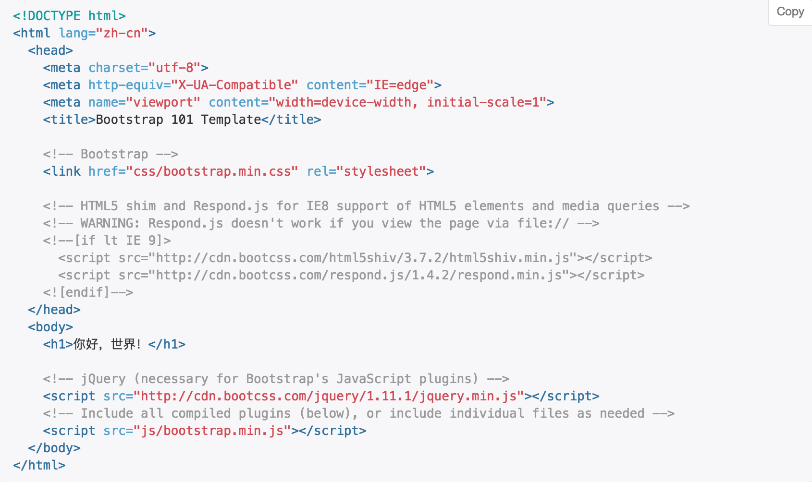

模板说明:
此模板基于bootstrap进行网页开发,但其中包含的很多知识是所有开发都要使用的.
1.首先文档类型声明,这里是html5,所以使用!DOCTYPE html.
2.根元素html标签中声明语言类型.lang="zh-cn"(引号同意使用双引号,缩进也要有一致规范,这里是两个空格).
3.声明字符编码,一般采用utf-8(注意编辑器配置时也应当使用utf-8).
4.声明IE渲染模式.设置为最新的一种.这里是edge model.完整标签内容是:http-equiv="X-UA-Compatible" content= "IE=edge".
5.为了确保在手机端适当的绘制和触屏缩放,需要设置相关meta标签,meta标签的内容是:name="viewport" content="width=device-width,initial-scale=1".可以添加一条user-scalable=no禁用缩放功能这时用户就只能滚动屏幕,看上去更像原生应用(是否设置根据自己的情况而定).
6.引入两个js文件,修复html5在IE8中的bug,包括HTML5新增元素的正常显示和媒体查询功能.
7.引入bootstrap的css文件. 8.最后引入jquery和bootstrap的js文件.因为bootstrap是基于jquery开发的,所以要先引入jquery再引入bootstrap.js.